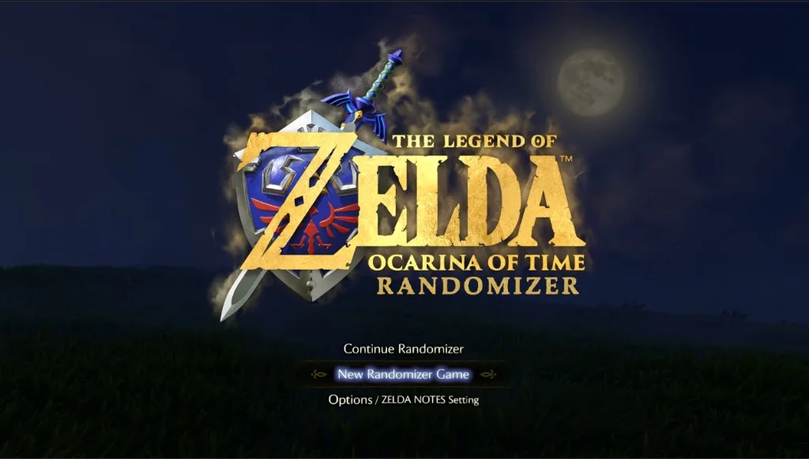
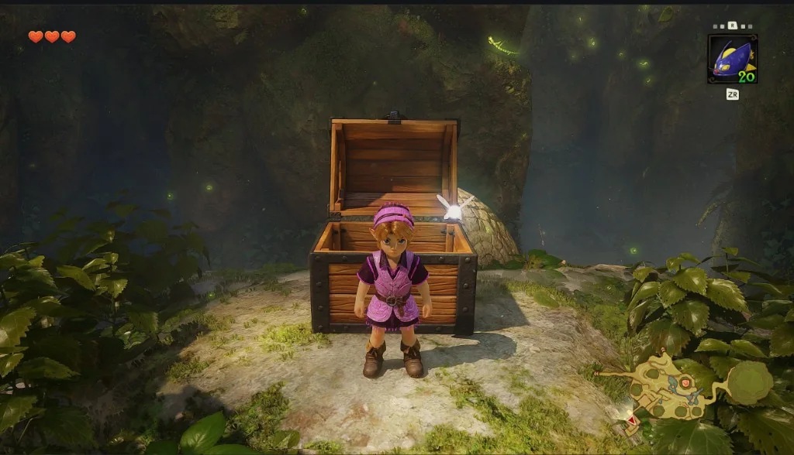
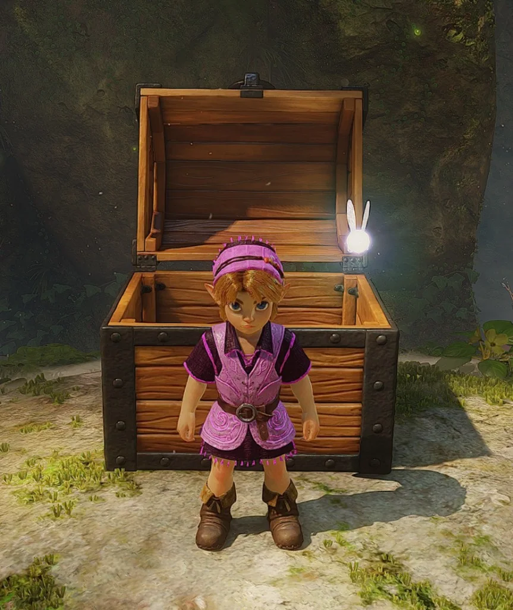
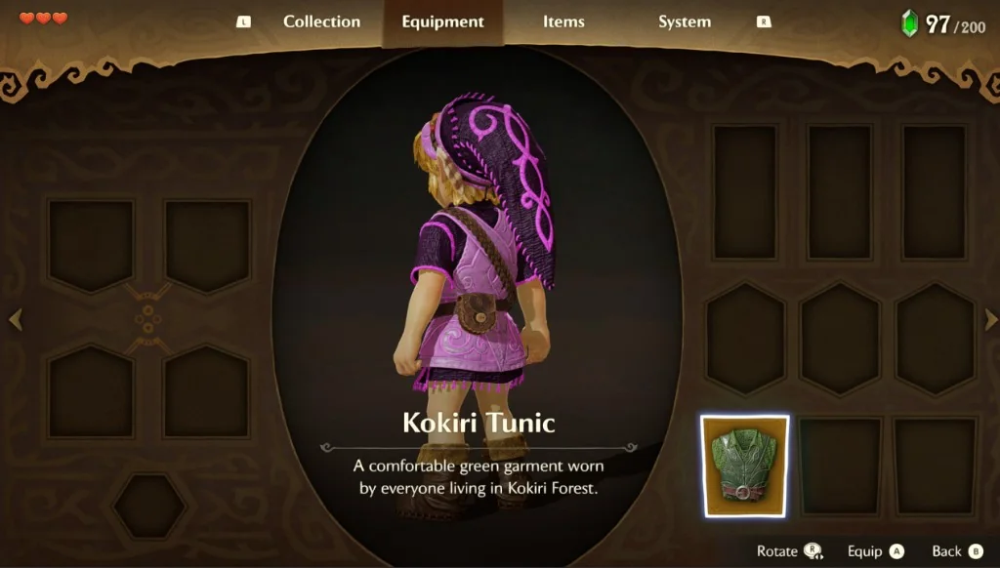
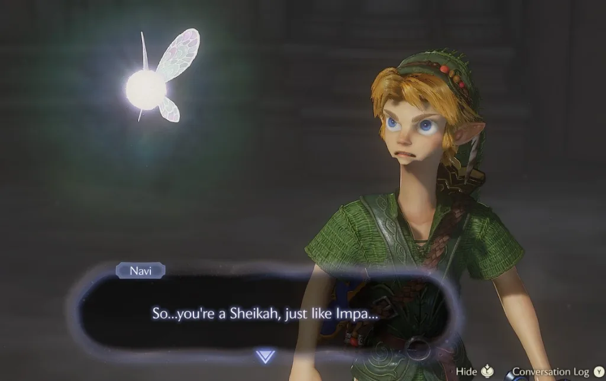
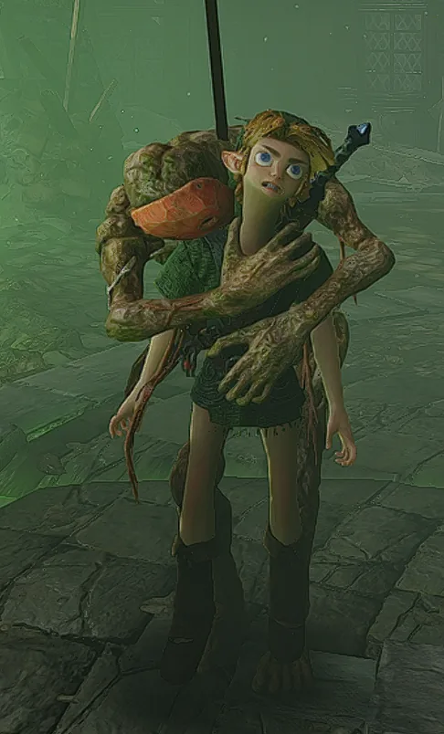

See It in Action





Silly Bodies: Lank and Lunk





Click a screenshot to enlarge it. All screenshots come from the developer's own copy of the game.
Your Game
Getting a RomFS folder: in most emulators, right-click the game and choose Dump RomFS or Extract RomFS. Include the update you play on, then choose the folder here.
Only the few hundred files the randomizer uses are read from your copy. Nothing is uploaded, and no game files are stored on this site.
Settings
Seed
The same seed and settings always make the same game. Words work too.
Share this with friends so everyone races the same rules.
The spoiler log lists where every item went. Only open it if you get stuck.
Install the Mod
How It Works
1. Your game files are never changed
Nothing in your dump is edited. The site produces a separate mod folder containing replacement files, and the emulator reads those instead of the originals. Remove the folder and the game is exactly as it was.
2. Placement follows a set of rules
Before an important item is placed, the randomizer checks that you could reach that spot without already owning the item. Once everything is placed, it simulates a full playthrough to make sure Ganon can be reached, and starts over if not. No Logic turns all of this off.
3. Experimental logic
The rules about what each area needs are based on the original game and are still being checked against the remake. Some places were redesigned, including parts of Death Mountain and the Hyrule Castle grounds, and a few Heart Pieces and Gold Skulltulas moved. A seed can occasionally expect a route that doesn't exist anymore.
If you get stuck because an item seemed reachable but wasn't, please report a logic problem with your settings string. Each report helps correct the rules.
4. The mod is built from your copy
Item spots are written into each area's layout files, character rewards into their scripts, new-file defaults into the save data list, and colors into Link's textures. Important items that end up on the ground become new objects that you collect by walking into them.
5. Install and play
Supported game files
.nup game files and extracted RomFS folders are fully supported. For a folder, extract the game's RomFS with your emulator, including the update you play on, and choose that folder. Only the files the randomizer needs are opened.
Other formats such as NSP, XCI, NSZ and XCZ are encrypted. The site will attempt to read them, and if it can't, it sends the developer a short report describing how the file is laid out: the names and sizes of the parts inside it. No game data, keys or personal files are ever sent.
Game version
Mods are built for the exact game version you provide. After a game update, generate a new seed from the updated copy.
Credits
Inspiration
The idea of an Ocarina of Time randomizer, and many of the options here, come from the Ocarina of Time Randomizer for the original Nintendo 64 game and the community around it. That includes keysanity, song shuffle, Gossip Stone hints, open settings, Gold Skulltula shuffle and traps. The Lank and Lunk body swaps are a nod to the long-running community joke. This project is not affiliated with them and shares none of their code, but it would not exist without their years of work. Please support them.
Thanks also to the speedrunning and randomizer communities, such as ZeldaSpeedRuns, whose players and streamers made these games so much fun to watch.
How this was made
This is a hobby project by one fan who wanted to play a randomizer on this version of the game. All of the code was written with an AI coding assistant, then tested and corrected by playing each change in the Lichii emulator. Locations, scripts and map data were found by reading the developer's own copy of the game. The logic rules are based on how the original game works and are still being checked against the remake.
Open source tools
- evfl by leoetlino, for reading and writing event scripts (GPL-2.0-or-later)
- astc-encoder by Arm, for texture recoloring (Apache-2.0)
- Pyodide, which runs the randomizer in your browser (MPL-2.0)
- python-zstandard (BSD-3-Clause), mmh3 (MIT), NumPy (BSD-3-Clause) and Pillow (MIT-CMU)
- TeX Gyre Pagella font by GUST e-foundry (GUST Font License)
- File format research shared publicly by the Tears of the Kingdom modding community
Source code
The full source code is public on GitHub under the GPL-3.0-or-later license. Corrections to the logic are especially welcome.